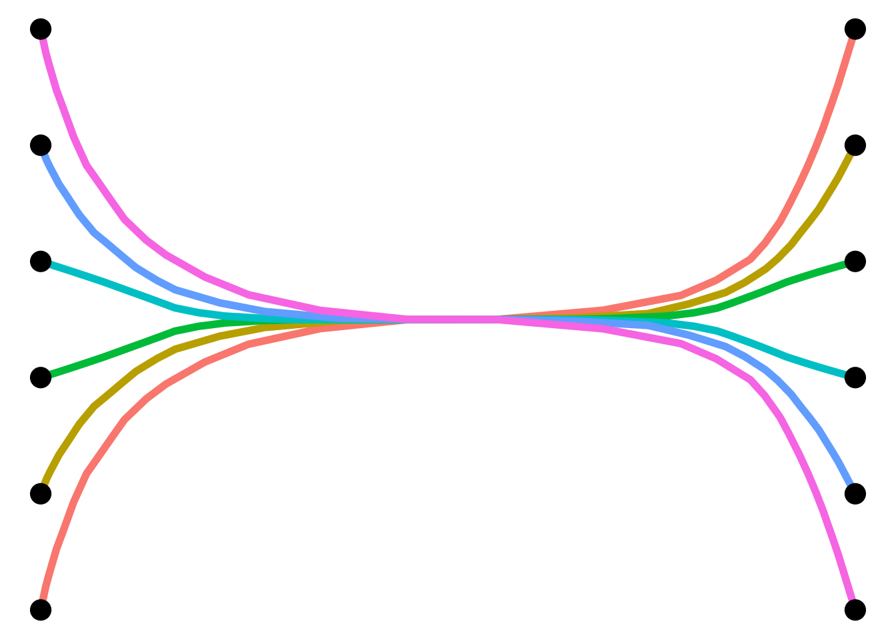
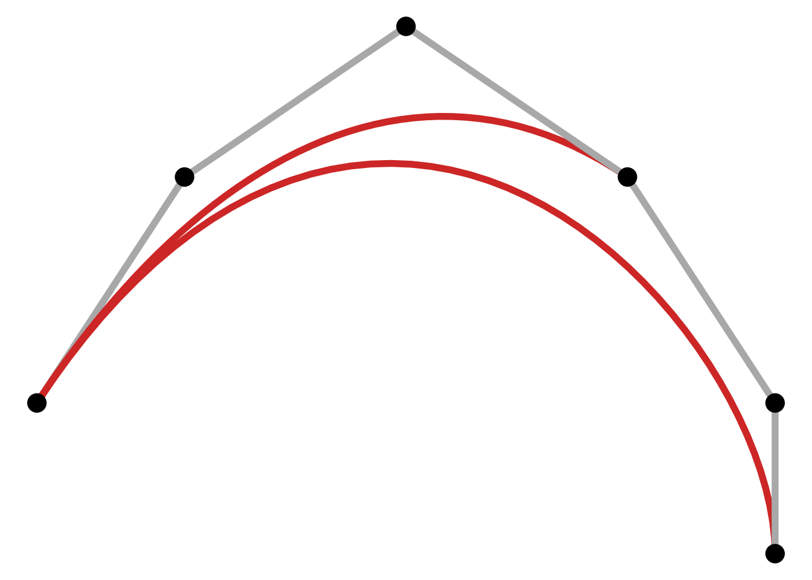
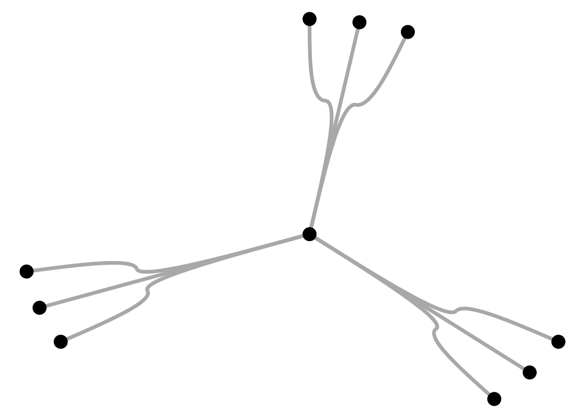

install.packages("edgebundle")edgebundle
An R package implementing edgebundling techniques
2020-12-15
An R package that implements several edge bundling/flow and metro map algorithms. So far it includes
- Force directed edge bundling (paper)
- Stub bundling (paper)
- Hammer bundling (python code)
- Edge-path bundling (paper)
- TNSS flow map (paper)
- Multicriteria Metro map layout (paper)
(The API is not very opinionated yet and may change in future releases.)
Installation
The package is available on CRAN.
The developer version can be installed with
# install.packages("remotes")
remotes::install_github("schochastics/edgebundle")Note that edgebundle imports reticulate and uses a pretty big python library (datashader).
library(edgebundle)
library(igraph)Edge bundling
The expected input of each edge bundling function is a graph (igraph/network or tbl_graph object) and a node layout.
All functions return a data frame of points along the edges of the network that can be plotted with {{ggplot2}} using geom_path() or geom_bezier() for edge_bundle_stub().
library(igraph)
g <- graph_from_edgelist(
matrix(c(1,12,2,11,3,10,4,9,5,8,6,7),ncol=2,byrow = T),F)
xy <- cbind(c(rep(0,6),rep(1,6)),c(1:6,1:6))
fbundle <- edge_bundle_force(g,xy,compatibility_threshold = 0.1)
head(fbundle)
#> x y index group
#> 1 0.00000000 1.00000 0.0000000 1
#> 2 0.00611816 1.19977 0.0303030 1
#> 3 0.00987237 1.29767 0.0606061 1
#> 4 0.01929293 1.52427 0.0909091 1
#> 5 0.02790686 1.68643 0.1212121 1
#> 6 0.03440142 1.81285 0.1515152 1The result can be visualized as follows.
library(ggplot2)
ggplot(fbundle) +
geom_path(aes(x, y, group = group, col = as.factor(group)),
size = 2, show.legend = FALSE) +
geom_point(data = as.data.frame(xy), aes(V1, V2), size = 5) +
theme_void()
# simple edge-path bundling example
g <- graph_from_edgelist(matrix(c(1, 2, 1, 6, 1, 4, 2, 3, 3, 4, 4, 5, 5, 6),
ncol = 2, byrow = TRUE), FALSE)
xy <- cbind(c(0, 10, 25, 40, 50, 50), c(0, 15, 25, 15, 0, -10))
res <- edge_bundle_path(g, xy, max_distortion = 2, weight_fac = 2, segments = 50)
ggplot() +
geom_path(data = res, aes(x, y, group = group, col = as.factor(group)),
size = 2, show.legend = FALSE) +
geom_point(data = as.data.frame(xy), aes(V1, V2), size = 5) +
scale_color_manual(values = c("grey66", "firebrick3", "firebrick3", rep("grey66", 4))) +
theme_void()
For edge_bundle_stub(), you need geom_bezier() from the package {{ggforce}}.
library(ggforce)
g <- graph.star(10, "undirected")
xy <- matrix(c(
0, 0,
cos(90 * pi / 180), sin(90 * pi / 180),
cos(80 * pi / 180), sin(80 * pi / 180),
cos(70 * pi / 180), sin(70 * pi / 180),
cos(330 * pi / 180), sin(330 * pi / 180),
cos(320 * pi / 180), sin(320 * pi / 180),
cos(310 * pi / 180), sin(310 * pi / 180),
cos(210 * pi / 180), sin(210 * pi / 180),
cos(200 * pi / 180), sin(200 * pi / 180),
cos(190 * pi / 180), sin(190 * pi / 180)
), ncol = 2, byrow = TRUE)
sbundle <- edge_bundle_stub(g, xy, beta = 90)
ggplot(sbundle) +
geom_bezier(aes(x, y, group = group), size = 1.5, col = "grey66") +
geom_point(data = as.data.frame(xy), aes(V1, V2), size = 5) +
theme_void()
The typical edge bundling benchmark uses a dataset on us flights, which is included in the package.
g <- us_flights
xy <- cbind(V(g)$longitude, V(g)$latitude)
verts <- data.frame(x = V(g)$longitude, y = V(g)$latitude)
fbundle <- edge_bundle_force(g, xy, compatibility_threshold = 0.6)
sbundle <- edge_bundle_stub(g, xy)
hbundle <- edge_bundle_hammer(g, xy, bw = 0.7, decay = 0.5)
pbundle <- edge_bundle_path(g, xy, max_distortion = 12, weight_fac = 2, segments = 50)
states <- map_data("state")
p1 <- ggplot() +
geom_polygon(data = states, aes(long, lat, group = group),
col = "white", size = 0.1, fill = NA) +
geom_path(data = fbundle, aes(x, y, group = group),
col = "#9d0191", size = 0.05) +
geom_path(data = fbundle, aes(x, y, group = group),
col = "white", size = 0.005) +
geom_point(data = verts, aes(x, y),
col = "#9d0191", size = 0.25) +
geom_point(data = verts, aes(x, y),
col = "white", size = 0.25, alpha = 0.5) +
geom_point(data = verts[verts$name != "", ],
aes(x, y), col = "white", size = 3, alpha = 1) +
labs(title = "Force Directed Edge Bundling") +
ggraph::theme_graph(background = "black") +
theme(plot.title = element_text(color = "white"))
p2 <- ggplot() +
geom_polygon(data = states, aes(long, lat, group = group),
col = "white", size = 0.1, fill = NA) +
geom_path(data = hbundle, aes(x, y, group = group),
col = "#9d0191", size = 0.05) +
geom_path(data = hbundle, aes(x, y, group = group),
col = "white", size = 0.005) +
geom_point(data = verts, aes(x, y),
col = "#9d0191", size = 0.25) +
geom_point(data = verts, aes(x, y),
col = "white", size = 0.25, alpha = 0.5) +
geom_point(data = verts[verts$name != "", ], aes(x, y),
col = "white", size = 3, alpha = 1) +
labs(title = "Hammer Edge Bundling") +
ggraph::theme_graph(background = "black") +
theme(plot.title = element_text(color = "white"))
alpha_fct <- function(x, b = 0.01, p = 5, n = 20) {
(1 - b) * (2 / (n - 1))^p * abs(x - (n - 1) / 2)^p + b
}
p3 <- ggplot() +
geom_polygon(data = states, aes(long, lat, group = group),
col = "white", size = 0.1, fill = NA) +
ggforce::geom_bezier(
data = sbundle, aes(x, y,
group = group,
alpha = alpha_fct(..index.. * 20)
), n = 20,
col = "#9d0191", size = 0.1, show.legend = FALSE
) +
ggforce::geom_bezier(
data = sbundle, aes(x, y,
group = group,
alpha = alpha_fct(..index.. * 20)
), n = 20,
col = "white", size = 0.01, show.legend = FALSE
) +
geom_point(data = verts, aes(x, y),
col = "#9d0191", size = 0.25) +
geom_point(data = verts, aes(x, y),
col = "white", size = 0.25, alpha = 0.5) +
geom_point(data = verts[verts$name != "", ], aes(x, y),
col = "white", size = 3, alpha = 1) +
labs(title = "Stub Edge Bundling") +
ggraph::theme_graph(background = "black") +
theme(plot.title = element_text(color = "white"))
p4 <- ggplot() +
geom_polygon(data = states, aes(long, lat, group = group),
col = "white", size = 0.1, fill = NA) +
geom_path(data = pbundle, aes(x, y, group = group),
col = "#9d0191", size = 0.05) +
geom_path(data = pbundle, aes(x, y, group = group),
col = "white", size = 0.005) +
geom_point(data = verts, aes(x, y),
col = "#9d0191", size = 0.25) +
geom_point(data = verts, aes(x, y),
col = "white", size = 0.25, alpha = 0.5) +
geom_point(data = verts[verts$name != "", ], aes(x, y),
col = "white", size = 3, alpha = 1) +
labs(title = "Edge-Path Bundling") +
ggraph::theme_graph(background = "black") +
theme(plot.title = element_text(color = "white"))
p1
p2
p3
p4


Flow maps
A flow map is a type of thematic map that represent movements. It may thus be considered a hybrid of a map and a flow diagram. The package so far implements a spatial one-to-many flow layout algorithm using triangulation and approximate Steiner trees.
The function tnss_tree() expects a one-to-many flow network (i.e. a weighted star graph), a layout for the nodes and a set of dummy nodes created with tnss_dummies().
library(ggraph)
xy <- cbind(state.center$x,state.center$y)[!state.name%in%c("Alaska","Hawaii"),]
xy_dummy <- tnss_dummies(xy,4)
gtree <- tnss_tree(cali2010,xy,xy_dummy,4,gamma = 0.9)
ggraph(gtree,"manual",x=V(gtree)$x,y=V(gtree)$y)+
geom_polygon(data=us,aes(long,lat,group=group),fill="#FDF8C7",col="black")+
geom_edge_link(aes(width=flow,col=sqrt((xy[root,1]-..x..)^2 + (xy[root,2]-..y..)^2)),
lineend = "round",show.legend = FALSE)+
scale_edge_width(range=c(0.5,4),trans="sqrt")+
scale_edge_color_gradient(low="#cc0000",high = "#0000cc")+
geom_node_point(aes(filter=tnss=="leaf"),size=1)+
geom_node_point(aes(filter=(name=="California")),size=5,shape=22,fill="#cc0000")+
theme_graph()+
labs(title="Migration from California (2010) - Flow map")
To smooth the tree, use tnss_smooth(). Note that this changes the object type and you need to visualize it with {{ggplot2}} rather than {{ggraph}}.
smooth_df <- tnss_smooth(gtree,bw=5,n=20)
ggplot()+
geom_polygon(data=us,aes(long,lat,group=group),fill="#FDF8C7",col="black")+
geom_path(data = smooth_df,aes(x,y,group=destination,size=flow),
lineend = "round",col="firebrick3",alpha=1)+
theme_void()+
scale_size(range=c(0.5,3),guide = "none")+
labs(title="Migration from California (2010) - Flow map smoothed")
Metro Maps
Metro map(-like) graph drawing follow certain rules, such as octilinear edges. The algorithm implemented in the packages uses hill-climbing to optimize several features desired in a metro map. The package includes the metro map of Berlin as an example.
# the algorithm has problems with parallel edges
g <- simplify(metro_berlin)
xy <- cbind(V(g)$lon,V(g)$lat)*100
# the algorithm is not very stable. try playing with the parameters
xy_new <- metro_multicriteria(g,xy,l = 2,gr = 0.5,w = c(100,100,1,1,100),bsize = 35)
# geographic layout
ggraph(metro_berlin,"manual",x=xy[,1],y=xy[,2])+
geom_edge_link0(aes(col=route_I_counts),edge_width=2,show.legend = FALSE)+
geom_node_point(shape=21,col="white",fill="black",size=3,stroke=0.5)
#schematic layout
ggraph(metro_berlin,"manual",x=xy_new[,1],y=xy_new[,2])+
geom_edge_link0(aes(col=route_I_counts),edge_width=2,show.legend = FALSE)+
geom_node_point(shape=21,col="white",fill="black",size=3,stroke=0.5)+
theme_graph()+
labs(title = "Subway Network Berlin")
Disclaimer
Edge bundling is able to produce neat looking network visualizations. However, they do not necessarily enhance readability. After experimenting with several methods, it became quite evident that the algorithms are very sensitive to the parameter settings (and often really only work in the showcase examples…). Consult the original literature (if they even provide any guidelines) or experiment yourself and do not expect any miracles.